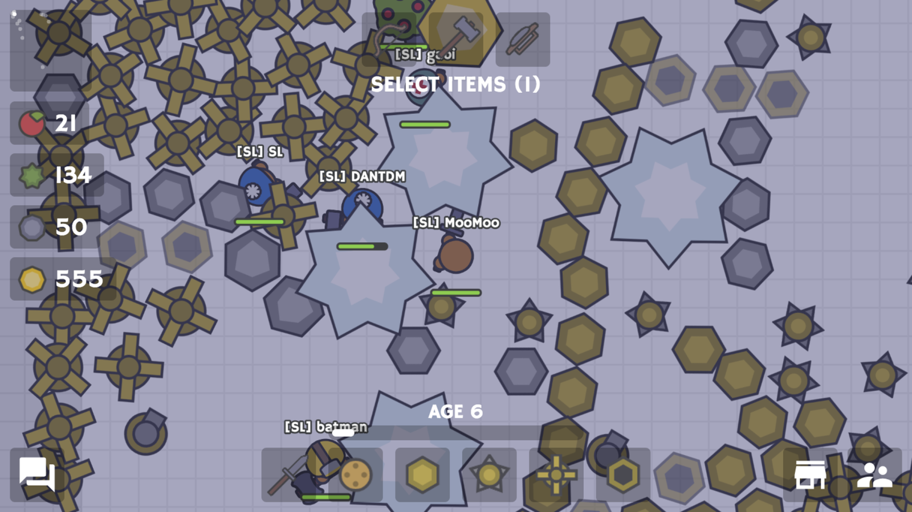

me irl
(my friend made this)
hiiii ₍˶ •. • ⑅₎
i'm an aspiring game devleoper / artist / storyteller / whatever else. i call myself a "jack of all trades" on the homepage for a reason... i wear a lot of hats! i'm also in college. unfortunately, i'm a
i may be going to school to go homeless get a boring tech job, but what i really love is making games. scratch was my gateway drug — i started when i was in 4th grade and haven't looked back. making a popular indie game has kinda been my dream since i was a kid (˶˃ ᵕ ˂˶)... that probably won't ever happen, but my game development journey is still far from over. i still hope that one day, i can make a really really good RPG!

my brain is fried
naturally, i've also taken an interest in art and animation. in fact, i'm actually working towards a minor in animation at my college! (as well as Drawabox 𖦹.𖦹). i have a soft spot for pixel art and anime style hand drawn animation in particular (
i also want to practice writing more (espeically fiction) in the future... i'm really interesting in storytelling but i haven't done it very much yet. additionally, i want to get into music production, in part so i can make music for my games, and also because i think it's pretty cool (⌐■U■). these are the two pieces of the puzzle that i haven't really gotten around to yet, but i'm working on it.
this might shock you, but the person who loves programming, video games, and has their own website does in fact sit at their computer a lot >.< but i do like to get out when i can!! in the winter, i like to ski! my parents started me on it when i was 6 or 7... crazy i was even able to ski then. i'm still not that good for how long i've been doing it, i get too scared to hit any jumps or tricks. but i'm at least decent and can do black diamonds. haven't done a double black yet though... one day!

LET'S GO NITRO
getting back to the indoorsy stuff, i really like the
 waaaaay back in ~2016-18 i played a ton of .io games. for the most part i was mediocre, with one exception: moomoo.io. i had a strategy that consistently allowed me to take over servers within a few hours... it involved playing with two tabs at once, lol. those were the days. but anyways, this was pretty much the first time i had to come up with an alias. i think i went through a bunch of different (very embarrasing) names. i distinctly remember one of them was Qwark. eventually, though, i came to my senses and settled on NonGMOTrash. i didn't choose the name because i dislike GM foods or anything (i've got a mixed stance on them). i just thought it sounded funny, and i was also pretty self degrading at the time. but it's pretty nice! a bit long, but it's very unique (haven't ever had my name taken on anything) and it tends to stand out to people.


if it's formal, email me at

if it's not, DM on discord. i'm nongmotrash